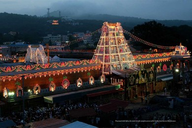
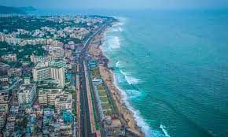
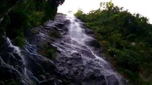

| TIRUPATI  Tirupati is one of the most ancient and sacred pilgrimage sites in India. Tirumala, the home of Lord Venkateswara is at a distance of 22 km from Tirupati. However, Tirupati is the town and transport hub to Tirumala at the bottom of the hill. The initial temple at Tirumala was built by the Tamil king Thondaimaan. The Pallavas of Kanchipuram (9th century), Cholas of Tanjore (10th century), Pandyas of Mathura and Vijayanagara Kings (14th & 15th centuries) regularly visited the temple and contributed largely to the temple. Especially, Sri Krishna Devaraya of Vijayanagara Empire contributed a lot to the temple. Now the temple is under the maintenance of TTD. Spread over an area of 450 sq. km, Tirupati offers a magnificent religious and natural delight to devotees as well as tourists. Apart from Lord Venkateswara Temple in Tirumala, Varahaswami temple, Tiruchanur temple of Goddess Padmavati, Govindaraja temple, Srinivasa Mangapuram, Avanakshamma temple, ISKCON Lord Krishna Temple etc. are the important temples in Tirupati. Kapila Theertham, Parasurameswara Temple in Gudimallam, Kodanda Rama Swamy Temple, Chandragiri Fort, Kanipakam, Srikalahasti and Talakona Falls are the famous Tirupati tourist places. |
| VISAKHAPATNAM  Also called by the name, ‘Vizag’, this is a coastal town also the industrial center of the state. It has been acclaimed to be one of the best places in Andhra Pradesh for it’s striking infrastructure and clean coast. Ramakrishna Beach is one of the most renowned sights in the city. It is also the spot where the preserved submarine, INS Kursura is located. The submarine now functions as a museum that highlights the life of the navy. One can also visit the Varaha Lakshi temple, indulge in some fantastic coastal food, and take a stroll on the beach. |
| GUNDUR  The main attractions in Guntur are the heritage site of Amaravathi, famous for its 2nd Century Mahachaitya Stupa and many other such historical relics. The Nagarjuna Sagar Dam and Ethipothala Fall, both situated on the River Krishna, are some of the most popular tourist attractions in Andhra Pradesh. The Amareshwara Temple is a very popular shrine dedicated to Lord Shiva. Mangalgiri is located between Guntur and Vijayawada and is a famous Vaishnav Temple. The other main attraction of Guntur is the remnants of the Buddhist Stupa built in 1796. While enjoying the archaeological wonders of Guntur, you can also indulge in different kinds of activities to unwind and relax with your friends and family. Other interesting places you can visit are the Uppalapadu Bird Sanctuary, where you can participate in bird watching and spend your time in the midst of nature. Crazy World is a water park which is well-equipped and provides the perfect entertainment for families and friends visiting Guntur |